skimage.data#
Test images and datasets.
A curated set of general purpose and scientific images used in tests, examples, and documentation.
Newer datasets are no longer included as part of the package, but are
downloaded on demand. To make data available offline, use download_all().
Color image of the astronaut Eileen Collins. |
|
Generate synthetic binary image with several rounded blob-like objects. |
|
Subset of data from the University of North Carolina Volume Rendering Test Data Set. |
|
Brick wall. |
|
Gray-level "camera" image. |
|
Chelsea the cat. |
|
Cell floating in saline. |
|
3D fluorescence microscopy image of cells. |
|
Checkerboard image. |
|
Chelsea the cat. |
|
Motion blurred clock. |
|
Coffee cup. |
|
Greek coins from Pompeii. |
|
Color Wheel. |
|
Download all datasets for use with scikit-image offline. |
|
A golden eagle. |
|
Calculate the hash of a given file. |
|
Grass. |
|
Gravel |
|
Black and white silhouette of a horse. |
|
Hubble eXtreme Deep Field. |
|
Image of human cells undergoing mitosis. |
|
Immunohistochemical (IHC) staining with hematoxylin counterstaining. |
|
Mouse kidney tissue. |
|
Return the path to the XML file containing the weak classifier cascade. |
|
Subset of data from the LFW dataset. |
|
Lily of the valley plant stem. |
|
Scikit-image logo, a RGBA image. |
|
Gray-level "microaneurysms" image. |
|
Surface of the moon. |
|
Image sequence of synchrotron x-radiographs showing the rapid solidification of a nickel alloy sample. |
|
Scanned page. |
|
Return image sequence of in-vivo tissue showing the palisades of Vogt. |
|
Microscopy image sequence with fluorescence tagging of proteins re-localizing from the cytoplasmic area to the nuclear envelope. |
|
Human retina. |
|
Launch photo of DSCOVR on Falcon 9 by SpaceX. |
|
Shepp Logan Phantom. |
|
Microscopy image of dermis and epidermis (skin layers). |
|
Rectified stereo image pair with ground-truth disparities. |
|
Gray-level "text" image used for corner detection. |
|
Case B1 image pair from the first PIV challenge. |
- skimage.data.astronaut()[source]#
Color image of the astronaut Eileen Collins.
Photograph of Eileen Collins, an American astronaut. She was selected as an astronaut in 1992 and first piloted the space shuttle STS-63 in 1995. She retired in 2006 after spending a total of 38 days, 8 hours and 10 minutes in outer space.
This image was downloaded from the NASA Great Images database <https://flic.kr/p/r9qvLn>`__.
No known copyright restrictions, released into the public domain.
- Returns:
- astronaut(512, 512, 3) uint8 ndarray
Astronaut image.
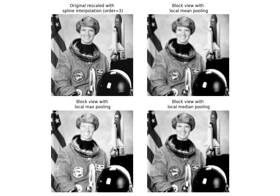Block views on images/arrays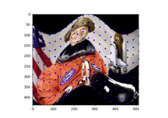Piecewise Affine Transformation
Piecewise Affine Transformation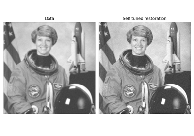Image Deconvolution
Gabors / Primary Visual Cortex “Simple Cells” from an Image
Gabors / Primary Visual Cortex "Simple Cells" from an Image
Comparison of segmentation and superpixel algorithms
Comparison of segmentation and superpixel algorithms


- skimage.data.binary_blobs(length=512, blob_size_fraction=0.1, n_dim=2, volume_fraction=0.5, rng=None)[source]#
Generate synthetic binary image with several rounded blob-like objects.
- Parameters:
- lengthint, optional
Linear size of output image.
- blob_size_fractionfloat, optional
Typical linear size of blob, as a fraction of
length, should be smaller than 1.- n_dimint, optional
Number of dimensions of output image.
- volume_fractionfloat, default 0.5
Fraction of image pixels covered by the blobs (where the output is 1). Should be in [0, 1].
- rng{
numpy.random.Generator, int}, optional Pseudo-random number generator. By default, a PCG64 generator is used (see
numpy.random.default_rng()). If rng is an int, it is used to seed the generator.
- Returns:
- blobsndarray of bools
Output binary image
Examples
>>> from skimage import data >>> data.binary_blobs(length=5, blob_size_fraction=0.2) array([[ True, False, True, True, True], [ True, True, True, False, True], [False, True, False, True, True], [ True, False, False, True, True], [ True, False, False, False, True]]) >>> blobs = data.binary_blobs(length=256, blob_size_fraction=0.1) >>> # Finer structures >>> blobs = data.binary_blobs(length=256, blob_size_fraction=0.05) >>> # Blobs cover a smaller volume fraction of the image >>> blobs = data.binary_blobs(length=256, volume_fraction=0.3)

Explore and visualize region properties with pandas
Explore and visualize region properties with pandas


- skimage.data.brain()[source]#
Subset of data from the University of North Carolina Volume Rendering Test Data Set.
The full dataset is available at [1].
- Returns:
- image(10, 256, 256) uint16 ndarray
Notes
The 3D volume consists of 10 layers from the larger volume.
References
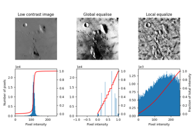Local Histogram Equalization
- skimage.data.brick()[source]#
Brick wall.
- Returns:
- brick(512, 512) uint8 image
A small section of a brick wall.
Notes
The original image was downloaded from CC0Textures and licensed under the Creative Commons CC0 License.
A perspective transform was then applied to the image, prior to rotating it by 90 degrees, cropping and scaling it to obtain the final image.


- skimage.data.camera()[source]#
Gray-level “camera” image.
Can be used for segmentation and denoising examples.
- Returns:
- camera(512, 512) uint8 ndarray
Camera image.
Notes
No copyright restrictions. CC0 by the photographer (Lav Varshney).
Changed in version 0.18: This image was replaced due to copyright restrictions. For more information, please see [1].
References

Using simple NumPy operations for manipulating images
Using simple NumPy operations for manipulating images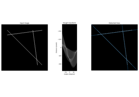Straight line Hough transform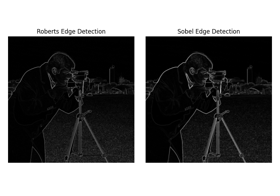Edge operators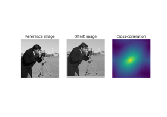Image Registration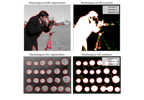Morphological Snakes


- skimage.data.cat()[source]#
Chelsea the cat.
An example with texture, prominent edges in horizontal and diagonal directions, as well as features of differing scales.
- Returns:
- chelsea(300, 451, 3) uint8 ndarray
Chelsea image.
Notes
No copyright restrictions. CC0 by the photographer (Stefan van der Walt).

- skimage.data.cell()[source]#
Cell floating in saline.
This is a quantitative phase image retrieved from a digital hologram using the Python library
qpformat. The image shows a cell with high phase value, above the background phase.Because of a banding pattern artifact in the background, this image is a good test of thresholding algorithms. The pixel spacing is 0.107 µm.
These data were part of a comparison between several refractive index retrieval techniques for spherical objects as part of [1].
This image is CC0, dedicated to the public domain. You may copy, modify, or distribute it without asking permission.
- Returns:
- cell(660, 550) uint8 array
Image of a cell.
References
[1]Paul Müller, Mirjam Schürmann, Salvatore Girardo, Gheorghe Cojoc, and Jochen Guck. “Accurate evaluation of size and refractive index for spherical objects in quantitative phase imaging.” Optics Express 26(8): 10729-10743 (2018). DOI:10.1364/OE.26.010729
- skimage.data.cells3d()[source]#
3D fluorescence microscopy image of cells.
The returned data is a 3D multichannel array with dimensions provided in
(z, c, y, x)order. Each voxel has a size of(0.29 0.26 0.26)micrometer. Channel 0 contains cell membranes, channel 1 contains nuclei.- Returns:
- cells3d: (60, 2, 256, 256) uint16 ndarray
The volumetric images of cells taken with an optical microscope.
Notes
The data for this was provided by the Allen Institute for Cell Science.
It has been downsampled by a factor of 4 in the row and column dimensions to reduce computational time.
The microscope reports the following voxel spacing in microns:
Original voxel size is
(0.290, 0.065, 0.065).Scaling factor is
(1, 4, 4)in each dimension.After rescaling the voxel size is
(0.29 0.26 0.26).
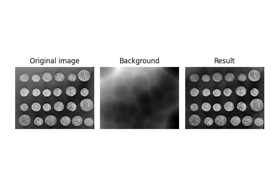Use rolling-ball algorithm for estimating background intensity
Use rolling-ball algorithm for estimating background intensity


- skimage.data.checkerboard()[source]#
Checkerboard image.
Checkerboards are often used in image calibration, since the corner-points are easy to locate. Because of the many parallel edges, they also visualise distortions particularly well.
- Returns:
- checkerboard(200, 200) uint8 ndarray
Checkerboard image.
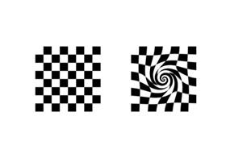Swirl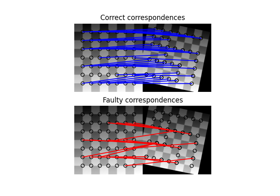Robust matching using RANSAC


- skimage.data.chelsea()[source]#
Chelsea the cat.
An example with texture, prominent edges in horizontal and diagonal directions, as well as features of differing scales.
- Returns:
- chelsea(300, 451, 3) uint8 ndarray
Chelsea image.
Notes
No copyright restrictions. CC0 by the photographer (Stefan van der Walt).
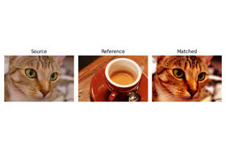Histogram matching
Full tutorial on calibrating Denoisers Using J-Invariance
Full tutorial on calibrating Denoisers Using J-Invariance


- skimage.data.clock()[source]#
Motion blurred clock.
This photograph of a wall clock was taken while moving the camera in an approximately horizontal direction. It may be used to illustrate inverse filters and deconvolution.
Released into the public domain by the photographer (Stefan van der Walt).
- Returns:
- clock(300, 400) uint8 ndarray
Clock image.
- skimage.data.coffee()[source]#
Coffee cup.
This photograph is courtesy of Pikolo Espresso Bar. It contains several elliptical shapes as well as varying texture (smooth porcelain to coarse wood grain).
- Returns:
- coffee(400, 600, 3) uint8 ndarray
Coffee image.
Notes
No copyright restrictions. CC0 by the photographer (Rachel Michetti).
Histogram matching
Region Boundary based Region adjacency graphs (RAGs)
Region Boundary based Region adjacency graphs (RAGs)


- skimage.data.coins()[source]#
Greek coins from Pompeii.
This image shows several coins outlined against a gray background. It is especially useful in, e.g. segmentation tests, where individual objects need to be identified against a background. The background shares enough grey levels with the coins that a simple segmentation is not sufficient.
- Returns:
- coins(303, 384) uint8 ndarray
Coins image.
Notes
This image was downloaded from the Brooklyn Museum Collection.
No known copyright restrictions.

Multi-Block Local Binary Pattern for texture classification
Multi-Block Local Binary Pattern for texture classification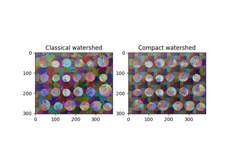Find Regular Segments Using Compact Watershed
Find Regular Segments Using Compact Watershed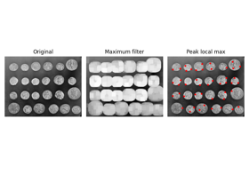Finding local maxima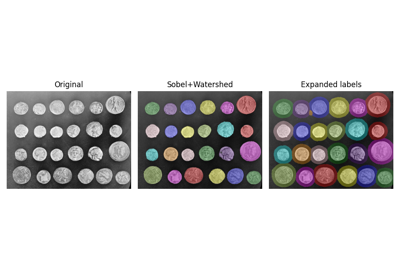Expand segmentation labels without overlap
Expand segmentation labels without overlap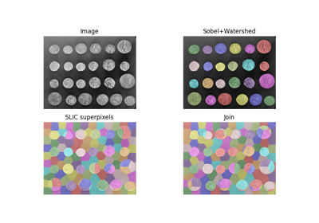Find the intersection of two segmentations
Find the intersection of two segmentationsMorphological SnakesUse rolling-ball algorithm for estimating background intensity
Use rolling-ball algorithm for estimating background intensity
Comparing edge-based and region-based segmentation
Comparing edge-based and region-based segmentation


- skimage.data.colorwheel()[source]#
Color Wheel.
- Returns:
- colorwheel(370, 371, 3) uint8 image
A colorwheel.
- skimage.data.download_all(directory=None)[source]#
Download all datasets for use with scikit-image offline.
Scikit-image datasets are no longer shipped with the library by default. This allows us to use higher quality datasets, while keeping the library download size small.
This function requires the installation of an optional dependency, pooch, to download the full dataset. Follow installation instruction found at
Call this function to download all sample images making them available offline on your machine.
- Parameters:
- directory: path-like, optional
The directory where the dataset should be stored.
- Raises:
- ModuleNotFoundError:
If pooch is not install, this error will be raised.
Notes
scikit-image will only search for images stored in the default directory. Only specify the directory if you wish to download the images to your own folder for a particular reason. You can access the location of the default data directory by inspecting the variable
skimage.data.data_dir.
- skimage.data.eagle()[source]#
A golden eagle.
Suitable for examples on segmentation, Hough transforms, and corner detection.
- Returns:
- eagle(2019, 1826) uint8 ndarray
Eagle image.
Notes
No copyright restrictions. CC0 by the photographer (Dayane Machado).

- skimage.data.file_hash(fname, alg='sha256')[source]#
Calculate the hash of a given file.
Useful for checking if a file has changed or been corrupted.
- Parameters:
- fnamestr
The name of the file.
- algstr
The type of the hashing algorithm
- Returns:
- hashstr
The hash of the file.
Examples
>>> fname = "test-file-for-hash.txt" >>> with open(fname, "w") as f: ... __ = f.write("content of the file") >>> print(file_hash(fname)) 0fc74468e6a9a829f103d069aeb2bb4f8646bad58bf146bb0e3379b759ec4a00 >>> import os >>> os.remove(fname)
- skimage.data.grass()[source]#
Grass.
- Returns:
- grass(512, 512) uint8 image
Some grass.
Notes
The original image was downloaded from DeviantArt and licensed under the Creative Commons CC0 License.
The downloaded image was cropped to include a region of
(512, 512)pixels around the top left corner, converted to grayscale, then to uint8 prior to saving the result in PNG format.
- skimage.data.gravel()[source]#
Gravel
- Returns:
- gravel(512, 512) uint8 image
Grayscale gravel sample.
Notes
The original image was downloaded from CC0Textures and licensed under the Creative Commons CC0 License.
The downloaded image was then rescaled to
(1024, 1024), then the top left(512, 512)pixel region was cropped prior to converting the image to grayscale and uint8 data type. The result was saved using the PNG format.
- skimage.data.horse()[source]#
Black and white silhouette of a horse.
This image was downloaded from openclipart
No copyright restrictions. CC0 given by owner (Andreas Preuss (marauder)).
- Returns:
- horse(328, 400) bool ndarray
Horse image.


- skimage.data.hubble_deep_field()[source]#
Hubble eXtreme Deep Field.
This photograph contains the Hubble Telescope’s farthest ever view of the universe. It can be useful as an example for multi-scale detection.
- Returns:
- hubble_deep_field(872, 1000, 3) uint8 ndarray
Hubble deep field image.
Notes
This image was downloaded from HubbleSite.
The image was captured by NASA and may be freely used in the public domain.
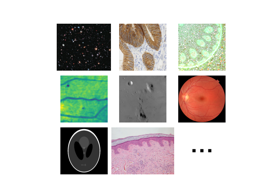Scientific images
Removing small objects in grayscale images with a top hat filter
Removing small objects in grayscale images with a top hat filter
Full tutorial on calibrating Denoisers Using J-Invariance
Full tutorial on calibrating Denoisers Using J-Invariance


- skimage.data.human_mitosis()[source]#
Image of human cells undergoing mitosis.
- Returns:
- human_mitosis: (512, 512) uint8 ndarray
Data of human cells undergoing mitosis taken during the preparation of the manuscript in [1].
Notes
Copyright David Root. Licensed under CC-0 [2].
References
[1]Moffat J, Grueneberg DA, Yang X, Kim SY, Kloepfer AM, Hinkle G, Piqani B, Eisenhaure TM, Luo B, Grenier JK, Carpenter AE, Foo SY, Stewart SA, Stockwell BR, Hacohen N, Hahn WC, Lander ES, Sabatini DM, Root DE (2006) A lentiviral RNAi library for human and mouse genes applied to an arrayed viral high-content screen. Cell, 124(6):1283-98 / :DOI: 10.1016/j.cell.2006.01.040 PMID 16564017
[2]GitHub licensing discussion CellProfiler/examples#41

- skimage.data.immunohistochemistry()[source]#
Immunohistochemical (IHC) staining with hematoxylin counterstaining.
This picture shows colonic glands where the IHC expression of FHL2 protein is revealed with DAB. Hematoxylin counterstaining is applied to enhance the negative parts of the tissue.
This image was acquired at the Center for Microscopy And Molecular Imaging (CMMI).
No known copyright restrictions.
- Returns:
- immunohistochemistry(512, 512, 3) uint8 ndarray
Immunohistochemistry image.
Scientific images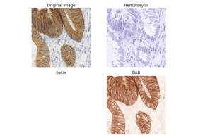Separate colors in immunohistochemical staining
Separate colors in immunohistochemical staining

- skimage.data.kidney()[source]#
Mouse kidney tissue.
This biological tissue on a pre-prepared slide was imaged with confocal fluorescence microscopy (Nikon C1 inverted microscope). Image shape is (16, 512, 512, 3). That is 512x512 pixels in X-Y, 16 image slices in Z, and 3 color channels (emission wavelengths 450nm, 515nm, and 605nm, respectively). Real-space voxel size is 1.24 microns in X-Y, and 1.25 microns in Z. Data type is unsigned 16-bit integers.
- Returns:
- kidney(16, 512, 512, 3) uint16 ndarray
Kidney 3D multichannel image.
Notes
This image was acquired by Genevieve Buckley at Monasoh Micro Imaging in 2018. License: CC0


- skimage.data.lbp_frontal_face_cascade_filename()[source]#
Return the path to the XML file containing the weak classifier cascade.
These classifiers were trained using LBP features. The file is part of the OpenCV repository [1].
References
[1]OpenCV lbpcascade trained files opencv/opencv
- skimage.data.lfw_subset()[source]#
Subset of data from the LFW dataset.
This database is a subset of the LFW database containing:
100 faces
100 non-faces
The full dataset is available at [2].
- Returns:
- images(200, 25, 25) uint8 ndarray
100 first images are faces and subsequent 100 are non-faces.
Notes
The faces were randomly selected from the LFW dataset and the non-faces were extracted from the background of the same dataset. The cropped ROIs have been resized to a 25 x 25 pixels.
References
[1]Huang, G., Mattar, M., Lee, H., & Learned-Miller, E. G. (2012). Learning to align from scratch. In Advances in Neural Information Processing Systems (pp. 764-772).

Face classification using Haar-like feature descriptor
Face classification using Haar-like feature descriptor

- skimage.data.lily()[source]#
Lily of the valley plant stem.
This plant stem on a pre-prepared slide was imaged with confocal fluorescence microscopy (Nikon C1 inverted microscope). Image shape is (922, 922, 4). That is 922x922 pixels in X-Y, with 4 color channels. Real-space voxel size is 1.24 microns in X-Y. Data type is unsigned 16-bit integers.
- Returns:
- lily(922, 922, 4) uint16 ndarray
Lily 2D multichannel image.
Notes
This image was acquired by Genevieve Buckley at Monasoh Micro Imaging in 2018. License: CC0
Scientific images
- skimage.data.logo()[source]#
Scikit-image logo, a RGBA image.
- Returns:
- logo(500, 500, 4) uint8 ndarray
Logo image.
- skimage.data.microaneurysms()[source]#
Gray-level “microaneurysms” image.
Detail from an image of the retina (green channel). The image is a crop of image 07_dr.JPG from the High-Resolution Fundus (HRF) Image Database: https://www5.cs.fau.de/research/data/fundus-images/
- Returns:
- microaneurysms(102, 102) uint8 ndarray
Retina image with lesions.
Notes
No copyright restrictions. CC0 given by owner (Andreas Maier).
References
[1]Budai, A., Bock, R, Maier, A., Hornegger, J., Michelson, G. (2013). Robust Vessel Segmentation in Fundus Images. International Journal of Biomedical Imaging, vol. 2013, 2013. DOI:10.1155/2013/154860
Scientific images

- skimage.data.moon()[source]#
Surface of the moon.
This low-contrast image of the surface of the moon is useful for illustrating histogram equalization and contrast stretching.
- Returns:
- moon(512, 512) uint8 ndarray
Moon image.
Scientific imagesLocal Histogram Equalization


- skimage.data.nickel_solidification()[source]#
Image sequence of synchrotron x-radiographs showing the rapid solidification of a nickel alloy sample.
- Returns:
- nickel_solidification: (11, 384, 512) uint16 ndarray
Notes
See info under nickel_solidification.tif at scikit-image/data/-/blob/master/README.md#data.
- skimage.data.page()[source]#
Scanned page.
This image of printed text is useful for demonstrations requiring uneven background illumination.
- Returns:
- page(191, 384) uint8 ndarray
Page image.
Use rolling-ball algorithm for estimating background intensity
Use rolling-ball algorithm for estimating background intensity

- skimage.data.palisades_of_vogt()[source]#
Return image sequence of in-vivo tissue showing the palisades of Vogt.
In the human eye, the palisades of Vogt are normal features of the corneal limbus, which is the border between the cornea and the sclera (i.e., the white of the eye). In the image sequence, there are some dark spots due to the presence of dust on the reference mirror.
- Returns:
- palisades_of_vogt: (60, 1440, 1440) uint16 ndarray
Notes
See info under in-vivo-cornea-spots.tif at scikit-image/data/-/blob/master/README.md#data.
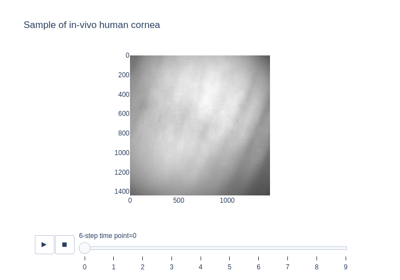Restore spotted cornea image with inpainting
Restore spotted cornea image with inpainting
- skimage.data.protein_transport()[source]#
Microscopy image sequence with fluorescence tagging of proteins re-localizing from the cytoplasmic area to the nuclear envelope.
- Returns:
- protein_transport: (15, 2, 180, 183) uint8 ndarray
Notes
See info under NPCsingleNucleus.tif at scikit-image/data/-/blob/master/README.md#data.

Measure fluorescence intensity at the nuclear envelope
Measure fluorescence intensity at the nuclear envelope
- skimage.data.retina()[source]#
Human retina.
This image of a retina is useful for demonstrations requiring circular images.
- Returns:
- retina(1411, 1411, 3) uint8 ndarray
Retina image in RGB.
Notes
This image was downloaded from wikimedia. This file is made available under the Creative Commons CC0 1.0 Universal Public Domain Dedication.
References
[1]Häggström, Mikael (2014). “Medical gallery of Mikael Häggström 2014”. WikiJournal of Medicine 1 (2). DOI:10.15347/wjm/2014.008. ISSN 2002-4436. Public Domain
Scientific images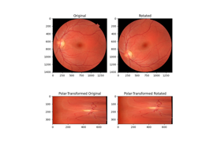Using Polar and Log-Polar Transformations for Registration
Using Polar and Log-Polar Transformations for Registration
Use pixel graphs to find an object’s geodesic center
Use pixel graphs to find an object's geodesic center

- skimage.data.rocket()[source]#
Launch photo of DSCOVR on Falcon 9 by SpaceX.
This is the launch photo of Falcon 9 carrying DSCOVR lifted off from SpaceX’s Launch Complex 40 at Cape Canaveral Air Force Station, FL.
- Returns:
- rocket(427, 640, 3) uint8 ndarray
Rocket image.
Notes
This image was downloaded from SpaceX Photos.
The image was captured by SpaceX and released in the public domain.
- skimage.data.shepp_logan_phantom()[source]#
Shepp Logan Phantom.
- Returns:
- phantom(400, 400) float64 image
Image of the Shepp-Logan phantom in grayscale.
References
[1]L. A. Shepp and B. F. Logan, “The Fourier reconstruction of a head section,” in IEEE Transactions on Nuclear Science, vol. 21, no. 3, pp. 21-43, June 1974. DOI:10.1109/TNS.1974.6499235
Scientific images
- skimage.data.skin()[source]#
Microscopy image of dermis and epidermis (skin layers).
Hematoxylin and eosin stained slide at 10x of normal epidermis and dermis with a benign intradermal nevus.
- Returns:
- skin(960, 1280, 3) RGB image of uint8
Notes
This image requires an Internet connection the first time it is called, and to have the
poochpackage installed, in order to fetch the image file from the scikit-image datasets repository.The source of this image is https://en.wikipedia.org/wiki/File:Normal_Epidermis_and_Dermis_with_Intradermal_Nevus_10x.JPG
The image was released in the public domain by its author Kilbad.
Scientific images
Trainable segmentation using local features and random forests
Trainable segmentation using local features and random forests
- skimage.data.stereo_motorcycle()[source]#
Rectified stereo image pair with ground-truth disparities.
The two images are rectified such that every pixel in the left image has its corresponding pixel on the same scanline in the right image. That means that both images are warped such that they have the same orientation but a horizontal spatial offset (baseline). The ground-truth pixel offset in column direction is specified by the included disparity map.
The two images are part of the Middlebury 2014 stereo benchmark. The dataset was created by Nera Nesic, Porter Westling, Xi Wang, York Kitajima, Greg Krathwohl, and Daniel Scharstein at Middlebury College. A detailed description of the acquisition process can be found in [1].
The images included here are down-sampled versions of the default exposure images in the benchmark. The images are down-sampled by a factor of 4 using the function
skimage.transform.downscale_local_mean. The calibration data in the following and the included ground-truth disparity map are valid for the down-sampled images:Focal length: 994.978px Principal point x: 311.193px Principal point y: 254.877px Principal point dx: 31.086px Baseline: 193.001mm
- Returns:
- img_left(500, 741, 3) uint8 ndarray
Left stereo image.
- img_right(500, 741, 3) uint8 ndarray
Right stereo image.
- disp(500, 741, 3) float ndarray
Ground-truth disparity map, where each value describes the offset in column direction between corresponding pixels in the left and the right stereo images. E.g. the corresponding pixel of
img_left[10, 10 + disp[10, 10]]isimg_right[10, 10]. NaNs denote pixels in the left image that do not have ground-truth.
Notes
The original resolution images, images with different exposure and lighting, and ground-truth depth maps can be found at the Middlebury website [2].
References
[1]D. Scharstein, H. Hirschmueller, Y. Kitajima, G. Krathwohl, N. Nesic, X. Wang, and P. Westling. High-resolution stereo datasets with subpixel-accurate ground truth. In German Conference on Pattern Recognition (GCPR 2014), Muenster, Germany, September 2014.


{kind=link}
- skimage.data.text()[source]#
Gray-level “text” image used for corner detection.
- Returns:
- text(172, 448) uint8 ndarray
Text image.
Notes
This image was downloaded from Wikipedia <https://en.wikipedia.org/wiki/File:Corner.png>`__.
No known copyright restrictions, released into the public domain.
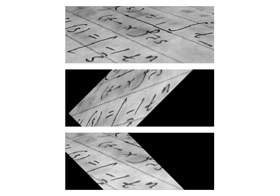Using geometric transformations
Using geometric transformations
{kind=link}
- skimage.data.vortex()[source]#
Case B1 image pair from the first PIV challenge.
- Returns:
- image0, image1(512, 512) grayscale images
A pair of images featuring synthetic moving particles.
Notes
This image was licensed as CC0 by its author, Prof. Koji Okamoto, with thanks to Prof. Jun Sakakibara, who maintains the PIV Challenge site.
References
[1]Particle Image Velocimetry (PIV) Challenge site http://pivchallenge.org
[2]1st PIV challenge Case B: http://pivchallenge.org/pub/index.html#b